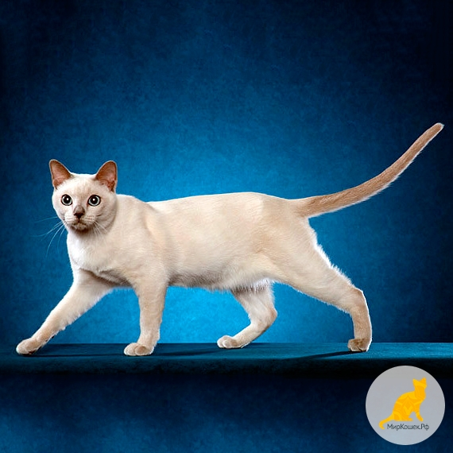
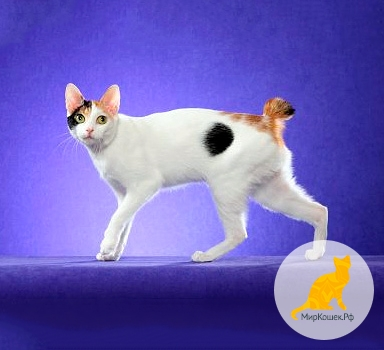
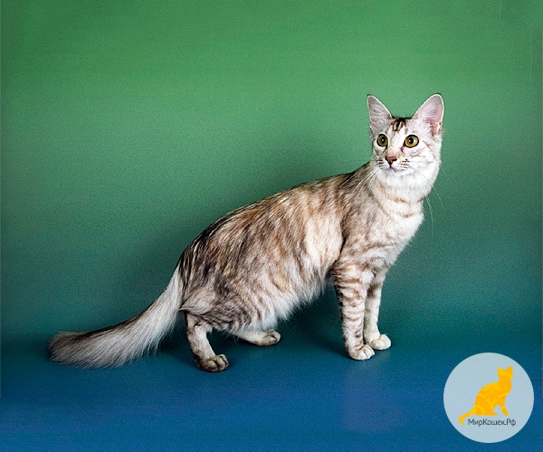
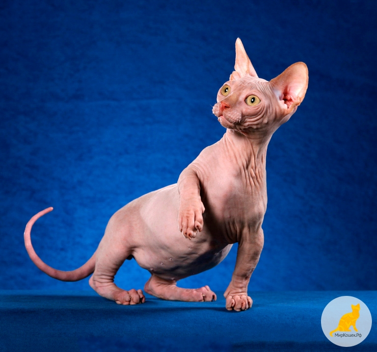
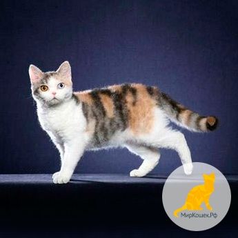
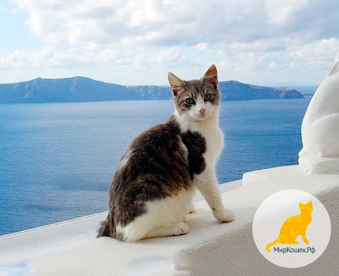
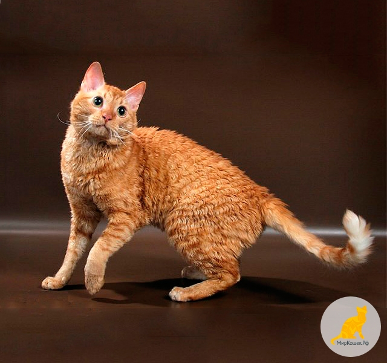
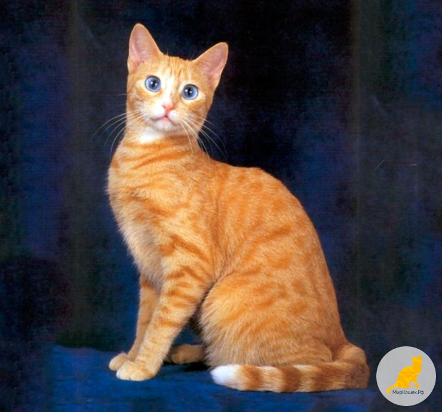
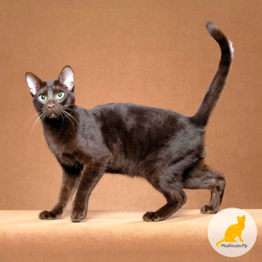
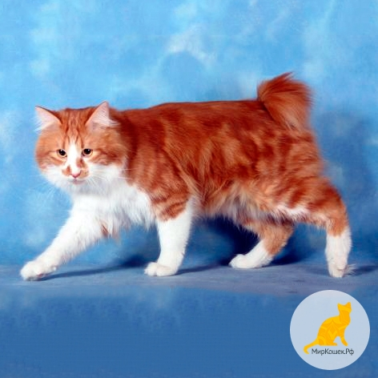

Категория котика 1
Оценка котика
$49.99
$100
Происхождение тонкинской породы – это удивительная и запутанная история.
Она напоминает бесконечный рассказ.
Одна из версий гласит, что первая тонкинская кошка появилась в Англии
в конце XIX века под видом шоколадной сиамской кошки.
Привезенные с Востока кошки имели коричневый окрас, который был
не характерным для сиамских кошек, и зеленовато-голубой или желтый цвет глаз.

Категория котика 2
Оценка котика
$500
Форин вайт – это порода, которая, согласно некоторым данным,
стала подоплекой для генетического конструктора под названием "сиамская кошка".
А история давно забытой породы такова: однажды, некая заводчица
(Тернер) захотела удивить мир породой, которая была еще не известна.
Изюминкой стал белый цвет. Именно так, Великобритания в 1964 году
получила новую белошерстную породу кошек.

Категория котика 3
Оценка котика
$600
Данная кошка с древних времен распространена в странах Дальнего Востока,
позже она попала на Японские острова, а оттуда в 1968 году –
в Америку, где и получила свое нынешнее название японский бобтейл.
Сами же японцы называли ее «ми-ке». Изображения этого вида кошек имеются
на старинных гравюрах и картинах императорских династий, а также
в токийском храме Готокуджу.

Категория котика
Оценка котика
$10
Данная порода кошек родом из Северной Америки. Считается, что порода появилась
в 1985 году. Согласно истории возникновения породы данный вид был получен путём
случайного спаривания кошек короткошёрстной и сиамской пород.
В результате спаривания
зародилась новая порода. Данный вид уже признан многими ассоциациями, например,
такими, как ACF, WCF, FIFE, GCCF и многими другими.

Категория котика
Оценка котика
$20
Порода минскин – очень редкая порода карликовых кошек.
Она появилась в конце 90-х годов прошлого века в питомнике Бостона,
при скрещивании манчкина и сфинкса. Затем были подключены породы бурму
и девон-рекс.

Категория котика
Оценка котика
$99.99
Американские жесткошерстные кошки очень похожи внешне и по многим
факторам на американских короткошерстных кошек, просто по той причине,
что произошли именно от них. По сути, породы отличают только по принципу
«проволочная шубка». Хотя на самом деле, это лишь визуальный эффект.

Категория котика
Оценка котика
$98
Эгейская кошка родом с острова Цикладис, который находится в Греции.
Греческие селекционеры начали работать над выводом этой породы
около двадцати лет назад. Так как эта порода обрела популярность не так давно,
и является представителем экспериментальных пород, то большинство людей считает,
что эгейская кошка – это представитель одного из редких видов.

Категория котика
Оценка котика
$98
Уральский рекс характеризуется как развитое и некрупное животное
с длинной волнистой шерстью. Тело отличается средними размерами,
мускулистостью, стройностью и элегантностью. Кошка уральский рекс имеет
ноги средней длины, стройные и сильные с овальными лапами. Хвост не длинный,
у основания не широкий, кончик слегка округлый. Голова в виде широкого
равностороннего треугольника.

Категория котика
Оценка котика
$160
Порода охос азулес («голубоглазая»- исп.) выведена в США.
В 1984 году внимание американских селекционеров привлек факт наличия
у кошек, не имеющих сиамского окраса, голубого цвета глаз. Родоначальницей
новой породы охос азулес стала кошка с черепаховым окрасом и голубыми
глазами, ее звали Конфлауэ.

Категория котика
Оценка котика
$87
Первая в мире разновидность ориентальной кошки была
зарегистрирована в 1959 году – это Гавана. Данной породе кошек
было присвоено такое название в честь кубинских сигар, так как их
окрас с шоколадно-коричневым оттенком очень похож на цвет сигар.
Кошка гавана своей внешностью схожа с сиамской кошкой. Но при этом она
обладает совершенным обаянием и неповторимостью.

Категория котика
Оценка котика
$55
Карельский бобтейл – это довольно редкая и весьма немногочисленная
порода очаровательных кошек с укороченным хвостом.
Начало своей истории эта порода ведет с 1992 года. Она признана
в клубах WCF, с присвоением стандарта CFF. Предположительно, карельский
бобтейл является потомком норвежской дикой кошки. Он имеет крепкое
телосложение, средние размеры, шерсть полудлинная.